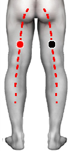

Neuralgia Ciatálgica
Par
ciático - ciático
cauda equina - cauda equina

Neuralgía Ciatálgica, Ciatalgia o simplemente Ciática es una afeccción del nervio ciático que causa dolor de considerable intensidad dificultando el caminar o moverse.
Generalidades:
Afecta al nervio ciático, el cual corre desde la 4 y 5° lumbar y porción del sacro (cauda equina) corriendo a lo largo de la parte posterior de las piernas hasta llegar a los pies; siendo uno de los nervios más largos del cuerpo humano. Algunas veces solo se presenta dolor del gluteo al hueco poplíteo, mientras que en otros casos el dolor se extiende hasta el pie. La Ciatica en si misma es un síntoma que puede ser indicador de varios factores.
Causas:
Puede ser causada por múltiples factores como infecciones de diversos tipos, falta de vitamina del complejo B o incluso por procesos autoinmunes. También está asociado a trabajos rudos como los desarrollados por albañiles, agricultores, obreros; por estar mucho tiempo inclinado (mecánico) o cargar bultos pesados, por lo que es más común en hombres que en mujeres, en proporción de 5 a 3. Todas estas actividades van ligadas a la compresión de las vertebras lumbares y a las hernias de disco, padecimientos asociados a la lumbalgia. Igualmente se puede sospechar la combinación de varios de los factores anteriores.